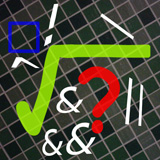

Los operadores lógicos realizan operaciones sobre valores booleanos, o resultados de expresiones relacionales, dando como resultado un valor booleano.
Los operadores lógicos los podemos ver en la tabla que se muestra a continuación.
Existen ciertos casos en los que el segundo operando de una expresión lógica no se evalúa para ahorrar tiempo de ejecución, porque con el primero ya es suficiente para saber cuál va a ser el resultado de la expresión.
Por ejemplo, en la expresión a && b si a es falso, no se sigue comprobando la expresión, puesto que ya se sabe que la condición de que ambos sean verdadero no se va a cumplir. En estos casos es más conveniente colocar el operando más propenso a ser falso en el lado de la izquierda. Igual ocurre con el operador ||, en cuyo caso es más favorable colocar el operando más propenso a ser verdadero en el lado izquierdo.
| Operador | Ejemplo en Java | Significado |
|---|---|---|
! |
!op | Devuelve true si el operando es false y viceversa. |
& |
op1 & op2 | Devuelve true si op1 y op2 son true |
| |
op1 | op2 | Devuelve true si op1 u op2 son true |
^ |
op1 ^ op2 | Devuelve true si sólo uno de los operandos es true |
&& |
op1 && op2 | Igual que &, pero si op1 es false ya no se evalúa op2 |
|| |
op1 || op2 | Igual que |, pero si op1 es true ya no se evalúa op2 |